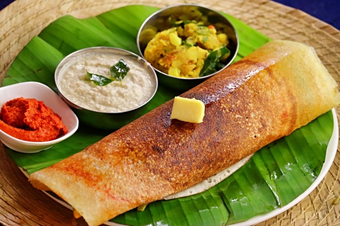

Dosa

A South Indian Classic
Dosa is a popular South Indian dish that is enjoyed across India and around the world. It is a thin, crispy pancake made from fermented rice and urad dal (black gram) batter. Dosa is known for its light and airy texture, tangy flavor, and versatility in terms of fillings and accompaniments.
Flavor profile: Dosa has a unique combination of tangy and savory flavors. The fermentation process gives it a distinct tanginess, while the addition of spices such as cumin seeds, mustard seeds, and curry leaves adds a savory depth to the dish. Dosa can be enjoyed plain or filled with a variety of ingredients, such as spiced potatoes (masala dosa), paneer (cheese), or even vegetables.
Serving suggestions: Dosa is typically served with a variety of chutneys (coconut chutney, tomato chutney, or mint chutney) and sambar (a lentil-based vegetable stew). It can be enjoyed as a breakfast item, snack, or even as a light meal.
Ingredients
- 1 cup rice (preferably parboiled or idli rice)
- 1/4 cup urad dal (black gram)
- 1/2 teaspoon fenugreek seeds
- Salt to taste
- Water for soaking and grinding
- Oil or ghee for cooking
Steps
- Rinse the rice and urad dal separately under cold water until the water runs clear. Soak the rice, urad dal, and fenugreek seeds in water for at least 4-6 hours or overnight.
- Drain the soaked rice and urad dal. Grind them separately to a smooth batter using a wet grinder or a high-speed blender, adding water as needed to achieve a pourable consistency. The urad dal batter should be light and fluffy.
- Combine the rice and urad dal batters in a large bowl. Add salt to taste and mix well. Cover the bowl and let the batter ferment in a warm place for 8-12 hours or until it has doubled in size and has a slightly tangy aroma.
- Once fermented, gently stir the batter. Heat a non-stick skillet or griddle over medium heat and lightly grease it with oil or ghee.
- Pour a ladleful of batter onto the center of the skillet and spread it outwards in a circular motion to form a thin pancake. Drizzle a little oil or ghee around the edges of the dosa.
- Cook until the edges start to lift and turn golden brown, then flip the dosa and cook for another minute until both sides are crispy. Repeat with the remaining batter.
- Serve hot with chutneys and sambar of your choice.
Home